How this project actually works. A flow follows one tool from the input to the output and names what every stage in between does to it; an architecture view shows the layers of the codebase, the modules on them and the path a real call takes through them. Each one is a single self-contained HTML file: no build step, no dependencies, no network.
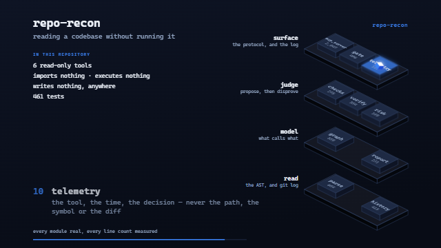
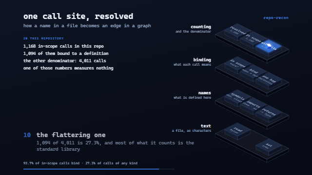
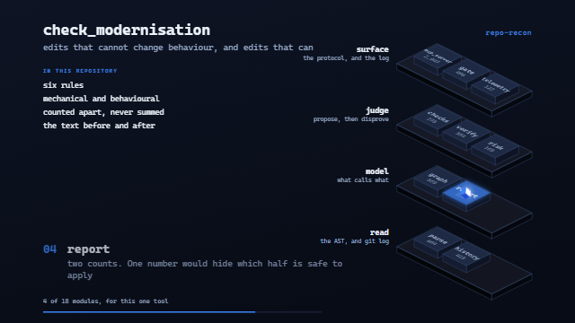
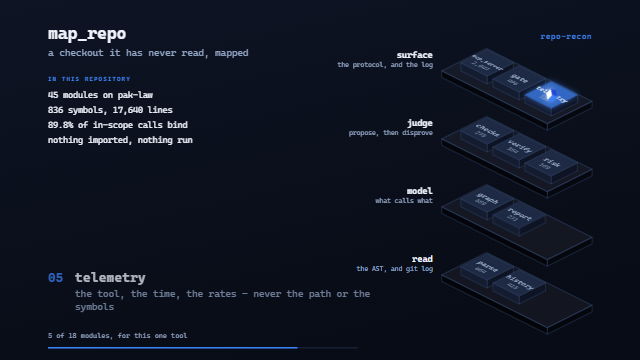
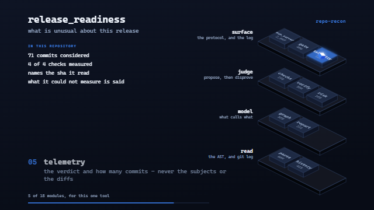
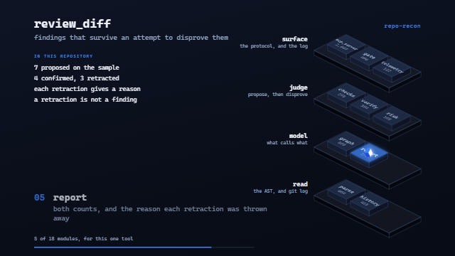
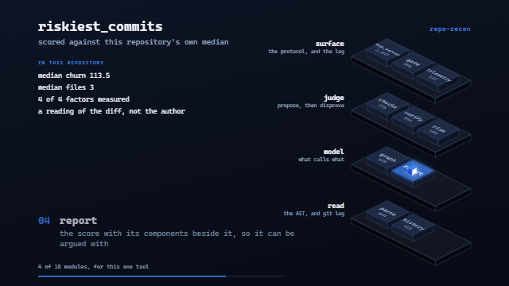
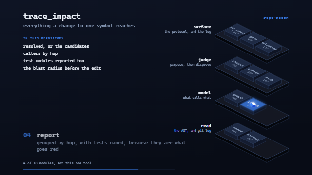
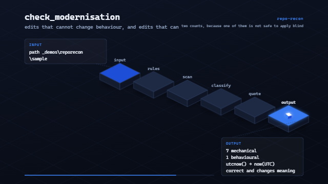
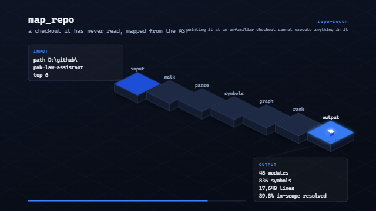
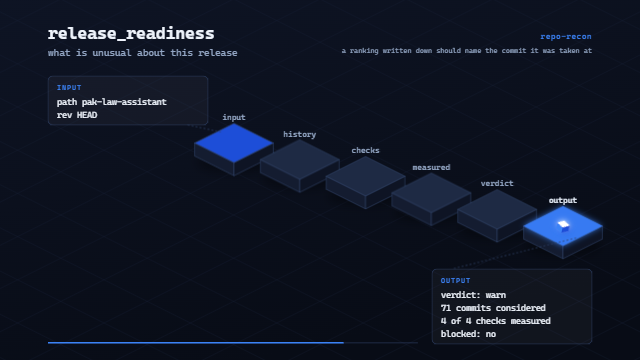
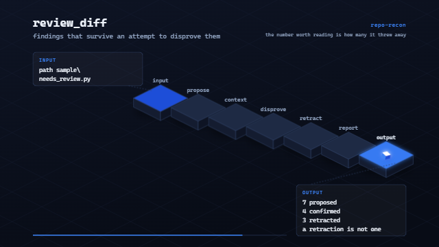
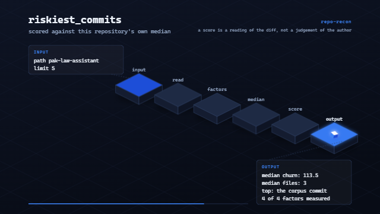
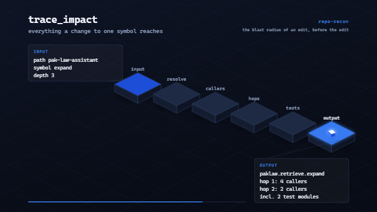